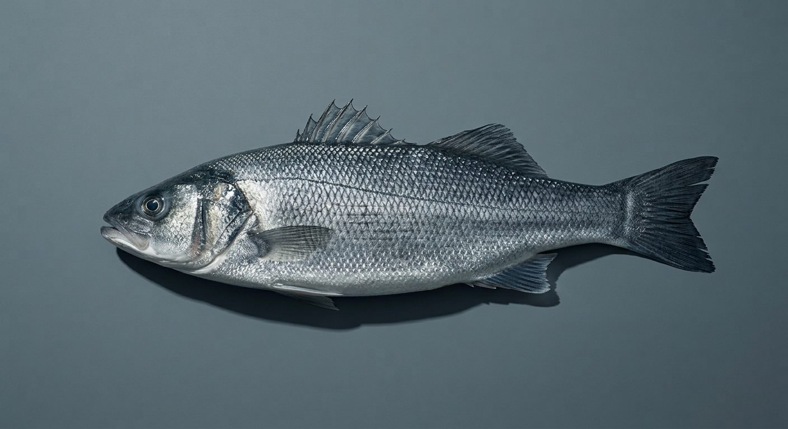

Poisson de ligne
Caractère
Une chair ferme, qui se détache en lamelles nettes. Le goût est délicat, légèrement sucré, sans aucune amertume si la peau est retirée à temps. La texture reste ferme même après une cuisson courte.
Données
PièceBar de ligne
CalibreÀ l'unité
ConservationRéfrigérée, sous 24-48h
GrammageSur demande
Accords & service
Cuisson vapeur ou à l'unilatérale, un filet d'huile, rien d'autre.